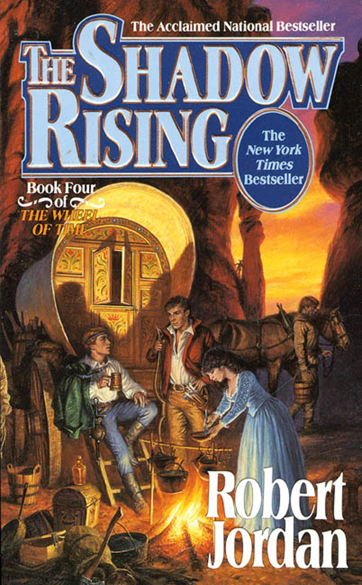

The Shadow Rising
⭐️⭐️⭐️⭐️
Format: üéß (41 hours 13 minutes)
I get it. These are "fantasy". You're not interested in reading books about magic. At the same time, you love fiction, well-developed storylines, characters, and plot twists. Somehow you can't get over this whole "magic" thing (though you read (and liked) Harry Potter), and give one of these books a shot. Come on. Start with the first in the series, and see how it goes from there.
This is my favorite book of the series so far. Admittedly, it wouldn't be any good if I hadn't read any of the prior books. Sure, the first book has some of the excitement of discovery that's associated with a new series. But here is where Jordan starts to do what I really enjoy - intertwine numerous storylines to simultaneously progress them all.
I really like the whole Rhuidean and Aiel Waste parts. The markings on Rand at this point aren't things he necessarily sought out, but they happened anyway - a way I more agree with prophesy being fulfilled. I love Mat's interaction with the Foxes - something he clearly doesn't fully comprehend yet (and neither do we). Perrin's relationship with Faile was great to watch develop, as was him taking on his role of leader in the Two Rivers. Reluctant, but competent. Also, the whole interaction with the White Cloaks was filled with such tension, it was nearly palpable. I'm obviously extremely curious to see how things play out with Asmodean - it's a great chance for Rand to learn, but we also have to acknowledge he's one of the Forsaken. At this point, I don't like Nynaeve. I know she's one of the main characters, but her pig-headedness, and constant anger are so off-putting, I don't care for her (though I loved the description of her battle with Moghedien). I feel bad for Siuan, but am curious to see where this fire in her leads, and if her compatriots contribute to things in significant ways.
Really. So many storylines. So many compelling characters. Such a rich and descriptive world. But you can't get over it being "fantasy". Whiner.
- Prior: The Dragon Reborn
- Next: The Fires of Heaven